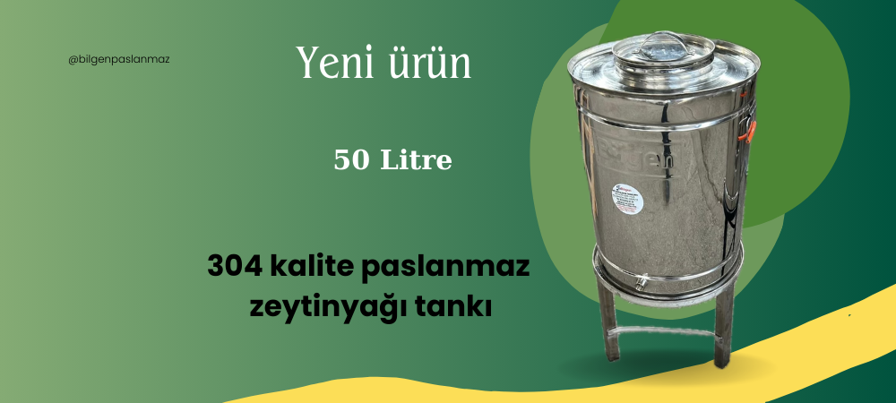
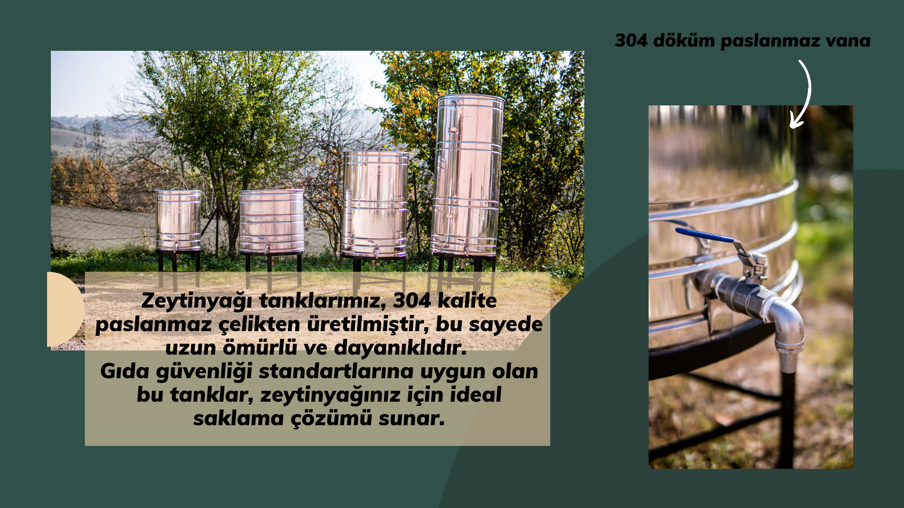
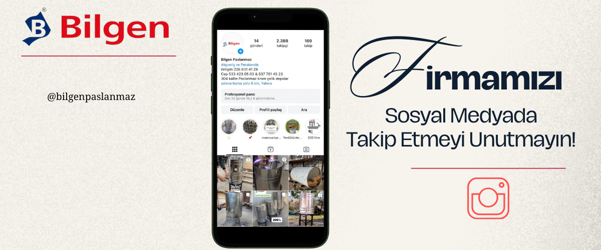

304 Kalite Paslanmaz
Özel üretim paslanmaz çelik ürünlerimizle tanışın.



Özel üretim paslanmaz çelik ürünlerimizle tanışın.
304 kalite paslanmaz çelik, eşsiz dayanıklılığı, üstün hijyen özellikleri ve çevre dostu yapısıyla sektördeki en güvenilir materyallerden biridir. Zeytinyağı gibi hassas gıda ürünlerinin depolanması için ideal bir tercihtir.